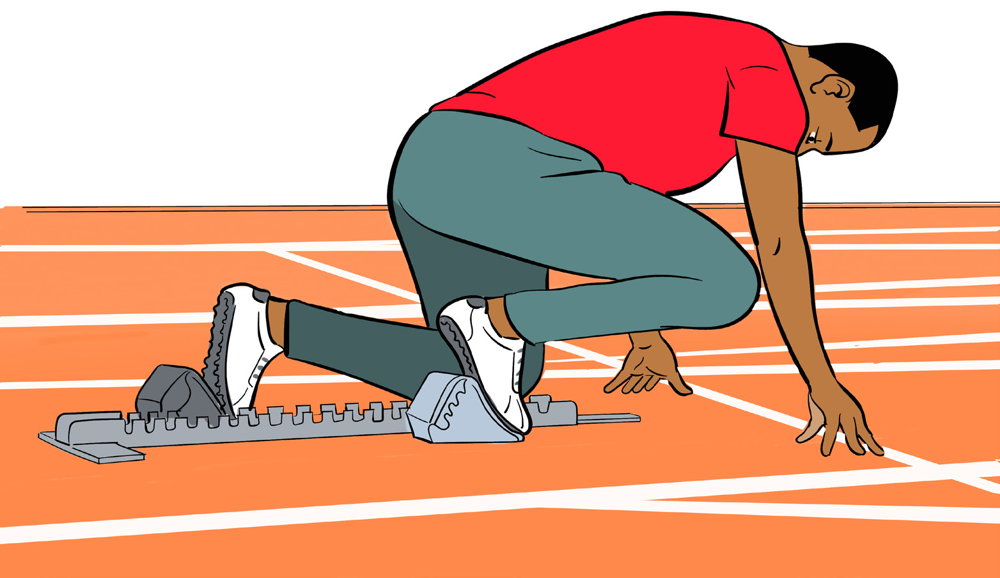

Take position directly in front of the starting blocks and place hands on the ground;
Place dominant leg on the front block and the foot of the other leg on the rear block, as shown in Figure 5.2;
Place the knee of rear leg on the ground;
Contact the ground with thumbs and index fingers just behind the starting line;
Spread the thumb and index finger so that they form high bridge; and
The arms are extended, chest wide, knee of the front leg is close to the arms, the head aligned with the shoulder and eyes are focused on a point on the ground.

Activity 5.2
Practise proper positioning following “on your mark” command.
Question:
1. What happens when the dominant leg is placed on the rear block and the other leg on the front block?
2. In the absence of standard starting blocks, how would you start 100 m race?